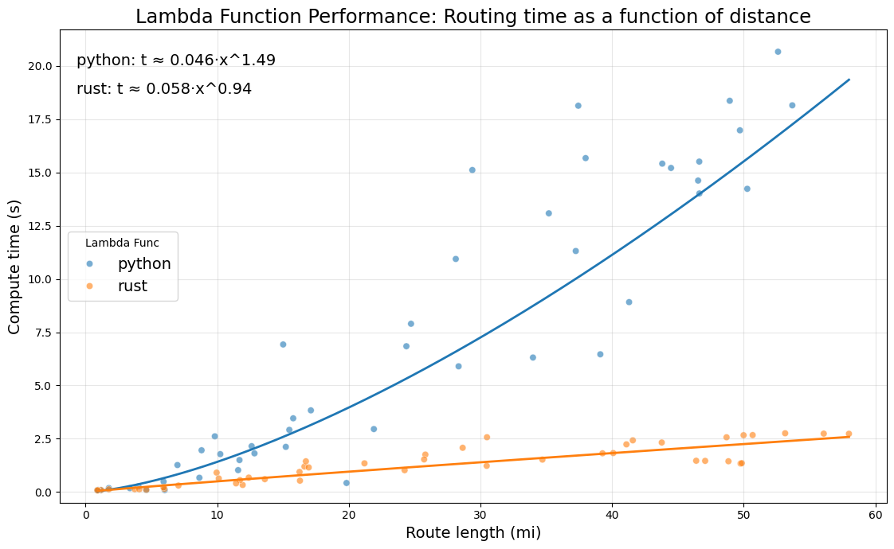
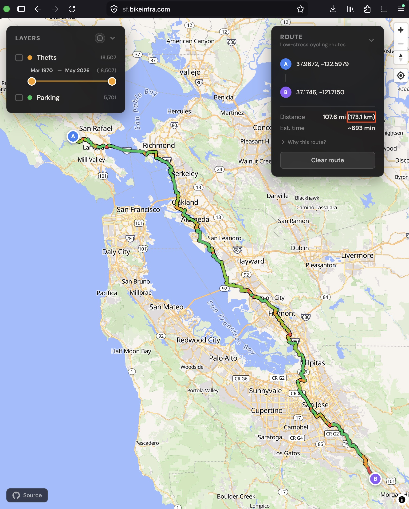
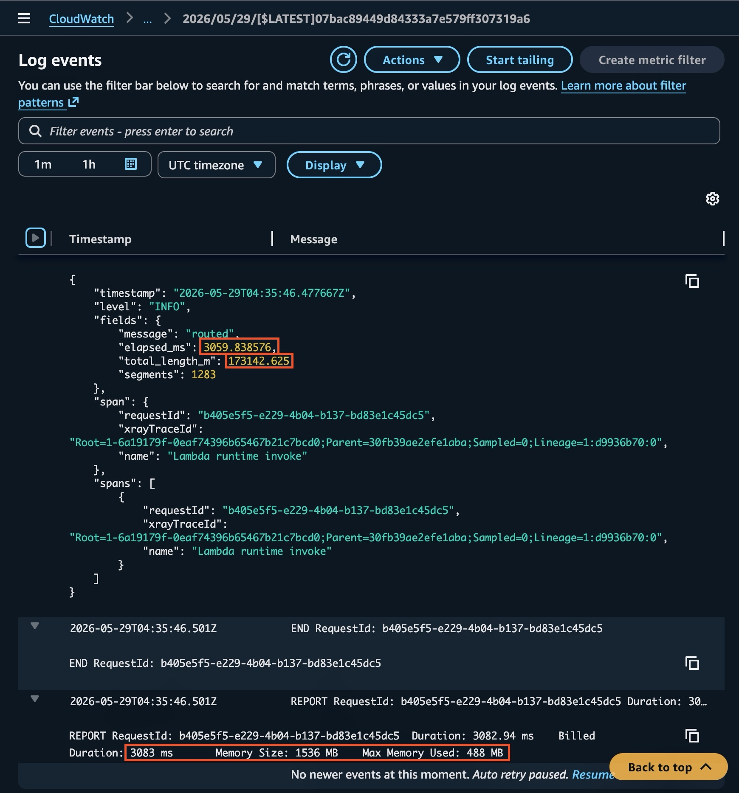

Python was the right language to build a bike router in. It was the wrong language to run one at metro scale. Here’s why I rewrote the routing engine in Rust, and how a correct prototype made that a ten-hour job.
data-engineering
rust
aws
performance
loci
projects
Author
Matt Triano
Published
May 28, 2026
In an earlier post I described a bike router that picks routes by how stressful they are to ride instead of how short they are. It turns OpenStreetMap edges, Chicago crash data, and bike infrastructure into a per-segment cost, then runs A* pathfinding over that cost inside an AWS Lambda function. This post is about why I rewrote that Lambda in Rust, a language I’d barely touched, and what it taught me about when chasing performance is actually worth it.
In Chicago the Python version was fine for most realistic routes. Past 20 or 25 miles I could feel it, though, sitting there for a few seconds while the route loaded. I wanted to add bigger places next, like the San Francisco Bay Area and New York, and at that level of performance it just wasn’t going to happen. On a graph that size the Python function would take long enough per route that a first-time visitor would assume the thing was broken and leave before it answered. Lambda also bills by the gigabyte-second, so slow routes on big graphs would have pushed me out of the free tier if traffic ever picked up. That part was almost beside the point, since nobody waits around for a router that looks broken anyway. Mostly I was building against a wall I could see coming, not putting out a fire.
Python is the fastest way to get it working
The hard part of this project was never the routing algorithm itself. A* is A*. The hard part was turning OpenStreetMap’s messy, inconsistent tags into a stress cost and then tuning the search until the routes looked right. That’s a loop you run hundreds of times, staring at maps and nudging weights.
Python is great for that loop. The ecosystem gave me the geospatial and graph tooling for free, and because it’s interpreted I could poke at things interactively and check each piece as I went. For a lot of data engineering and data science work that’s most of the job, and unless you’ve written something genuinely bad, there usually isn’t much performance left on the table. Reaching for a faster language by default is often a mistake. I don’t regret prototyping in Python at all, and I’d do it the same way again.
Until “fast enough” becomes a requirement
Sometimes performance really is the requirement. “Route across the Bay Area fast enough that a user doesn’t give up” is a system goal, and no amount of careful Python was going to hit it, because the cost was structural.
The graph shipped as a gzipped, pickled NetworkX object, which caused two problems. On a cold start, Python had to reconstruct every nested object on load. That inflated to somewhere between 1200 and 1600 MB in memory and took 8 to 15 seconds before the function could answer its first request. Then warm routing paid Python’s per-object overhead on every node the search touched, so compute time grew superlinearly with route length. Barely noticeable across a neighborhood, but you couldn’t miss it across a whole metro.
Optimizing isn’t free. It takes effort, it depends on actually spotting a real inefficiency, and it risks new bugs you’ll have to chase down later. So the payoff has to be worth it. Shaving a few percent off a job I run twice a month isn’t worth a day of work. This was a different situation. The gap was between “only serve small cities, or ship something so slow it looks broken” and “handle giant cities without breaking a sweat,” and a gap that big is worth going after. I tried the cheap moves first: more memory to get more vCPU, a leaner in-memory graph, keep-warm pings. They helped a little but didn’t touch the structural costs.
What I kept circling back to was the graph itself. I knew Rust was fast, but the thing that actually sold me was that its type system would let me pack the graph far more tightly than a gzipped dict-of-dicts ever could, into a fixed-layout binary instead of a pile of Python objects. That was the lever. A smaller graph hits the cold start and the package size at the same time the language change hits the compute. So I finally asked the question I’d been circling: how hard would it really be to rewrite this in Rust, given that I’d written almost none of it?
The prototype as a test oracle
What made this a ten-hour job instead of a month-long one is that I wasn’t starting from a blank page. I already had a correct, well-tested Python implementation, so the rewrite was really a translation problem with an answer key. Whatever route the Rust version produced, I could check it against the Python version on the same coordinates. And the scope was small and well-defined: one service, one algorithm, one interface I had to preserve exactly.
I broke it into ten focused chunks. The workspace skeleton, the packed binary graph format and its reader, the A* core, a little KD-tree for nearest-node lookup, the Lambda glue, the deployment cutover. After each chunk I validated against the known-good Python behavior instead of building the whole thing and hoping at the end. That’s the part I’d actually recommend copying. Checking each chunk meant weird behavior showed up early, while it was still cheap to fix, rather than piling up on a bad foundation or sneaking through as a silent bug. A wrong routing weight is exactly that kind of bug. It doesn’t throw an error, it just quietly hands you a slightly worse route.
The validation itself took some care. The tests for the binary format don’t round-trip through my own writer on purpose, because if my reader and writer shared the same misunderstanding, a round-trip would pass while still being wrong. They check against byte layouts I worked out by hand instead. There was real friction too. Pinning the exact Rust toolchain the AWS SDK wanted, and working around a dependency whose CPU intrinsics wouldn’t cross-compile to ARM. Going chunk by chunk let me deal with each of those as it came up.
I should be upfront that I used an AI assistant to write a lot of the unfamiliar Rust. What made it work wasn’t the model writing code, though. It was having a correct reference to check against, and knowing what to build, what to verify, and when to throw an approach out.
The complexity I chose not to build
One decision here never shows up in a benchmark, but I think it mattered. Rust needs a compile-and-package step that Python doesn’t. I spent an hour trying to figure out how to wire that build into the Airflow DAG that refreshes each city, because it was easy to have Airflow task package the Python Lambda function. I found ways to wire it up and preserve the existing workflow, but it was getting absurdly complex and brittle.
Even the best AI models will sometimes punish you by giving you exactly what you asked for. If you’re not putting in the time to understand what comes back, it’s easy to accept a Rube Goldberg contraption when you should have just asked for something simpler. Every design I was getting here was Rube Goldberg, so I scrapped the original ask and went looking for the simplest thing that met the actual need. The binary only needs rebuilding when I change the Rust code, which is rare, so automating a build on every city refresh would have meant a pile of orchestration to solve a problem I didn’t have. A Makefile that turns the build into a one-liner I run by hand was plenty. Most of the time the right move is to not build the thing you don’t need yet.
The difference
I benchmarked both versions the same way: 50 origin-destination pairs, ten in each of five distance bands (under 5 miles, 5 to 10, 10 to 20, 20 to 35, and 35 to 50), run through each function. Fitting compute time against route length with np.polyfit gave me:
python: \(t \approx 0.046\,x^{1.49}\)
rust: \(t \approx 0.058\,x^{0.94}\)

Compute time versus route length for the Python and Rust routing Lambdas. Python scales superlinearly; Rust scales nearly linearly.
I want to be careful about what this does and doesn’t show. It isn’t a change in algorithmic complexity. It’s the same A*, the same graph, the same heuristic, exploring roughly the same set of nodes for a given route. What changed is how much each node costs to touch. In Python, every visit pays for object overhead and dict-of-dicts lookups, and as routes get longer and the search frontier grows, those costs pile up: more allocation, and more cache misses from chasing pointers around a graph that isn’t laid out contiguously in memory. So the wall-clock time climbs faster than the actual work does. Rust’s graph is a flat array indexed by integer, so the per-node cost stays basically flat and the time tracks the real work.
There’s one honest wrinkle in those equations. Rust’s coefficient is actually a little higher than Python’s, so on very short routes they come out about even. But short routes were never the problem. The whole win shows up on the long, cross-metro routes that made the big cities impossible in the first place, and it only grows from there.
The rest of the numbers point the same direction. Cold start went from 8 to 15 seconds down to 1 or 2. The deployment package shrank from 67 MB to 4.9 MB. Real memory use dropped from a peak of 1200 to 1600 MB down to 200 to 400 MB. I still allocate 1024 or 1536 MB depending on the city, but not because I need the memory. More memory means a bigger slice of vCPU, and the work is finally bound by computation rather than by loading the graph.
The payoff is the thing I couldn’t do before. Open the San Francisco Bay Area map and ask it for a route so long you’d need two days to actually ride it, then watch how fast it comes back. That route simply wasn’t servable on the old setup, and being able to serve it is the whole reason I did this.
miles =107.6print(f"Python Lambda predicted time to find a {miles} mile route: {round(0.046* miles **1.49, 2)}s")print(f"Rust Lambda actual time to find a {miles} mile route: 3.0s")
Python Lambda predicted time to find a 107.6 mile route: 49.0s
Rust Lambda actual time to find a 107.6 mile route: 3.0s
To put a number on it: the Rust router calculated a 107.6 mile (173.1 km) route in just over 3 seconds. The measurements above show Python taking a bit over 15 seconds for a 50 mile route. Pushing its fitted curve out to 107.6 miles, well past the longest route I actually measured, predicts around 49 seconds. Python also had 33% more memory allocated, so on a gigabyte-second basis it would have cost close to 22x what the Rust version does for that one route. That’s the difference between a neat proof of concept and something people can actually use.

A long bike route drawn across most of the San Francisco Bay Area on the street map.

The CloudWatch trace for that route, showing it computed in just over three seconds.
If you’re weighing the same swap
If you’re thinking about a similar swap, here’s roughly how I’d frame it. Prototype in whatever language lets you think clearly. Once that prototype is correct and well-tested enough to act as your reference, you can move the slow part, and only the slow part, into a faster language. Try not to drag along complexity you don’t need while you’re at it. The reason mine took ten hours instead of a month is that the genuinely hard work, figuring out what the thing should do, was already finished before I wrote any Rust.